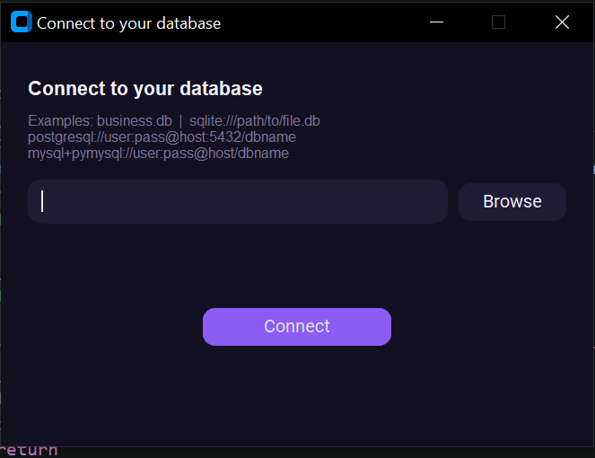
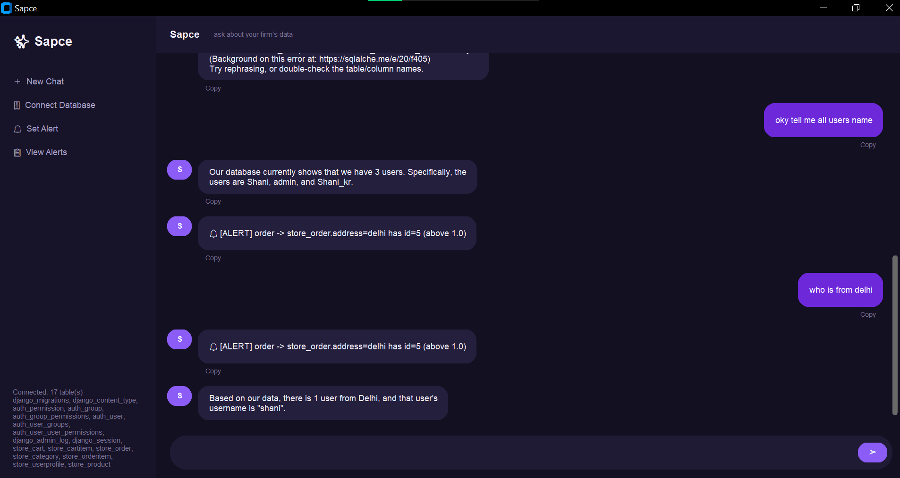
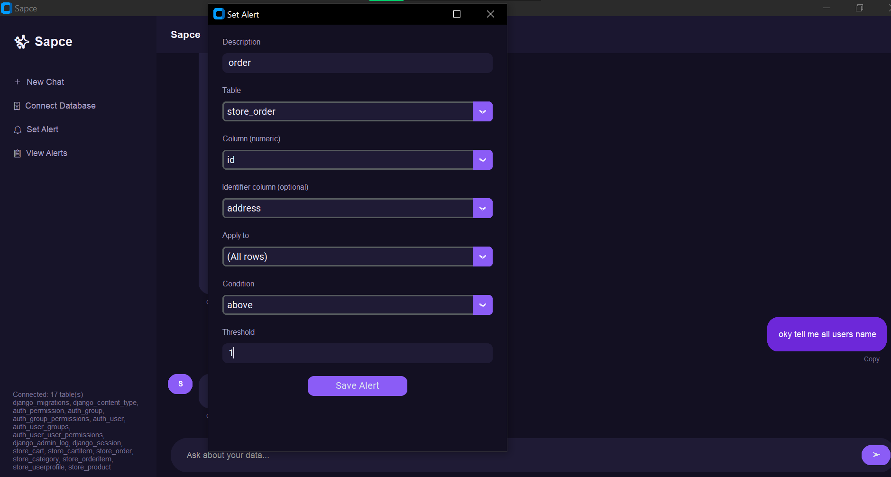

AI Data Assistant
A local AI assistant that connects to any database, reads its schema on its own, and answers questions about your data in plain English — no cloud, no SQL required.
Point Sapce at any SQLite, PostgreSQL, or MySQL database with a single connection string.
It reads the schema and sample rows on its own — no manual setup, no hardcoded tables.
Plain-English questions become safe SQL queries, answered back in plain language.



Every generated query is checked before it runs. Only a single read-only SELECT is allowed — nothing that could modify or delete data gets anywhere near your tables.
Set a threshold on any table or column — one specific product, or every row — and Sapce watches it quietly in the background until something crosses the line you set.